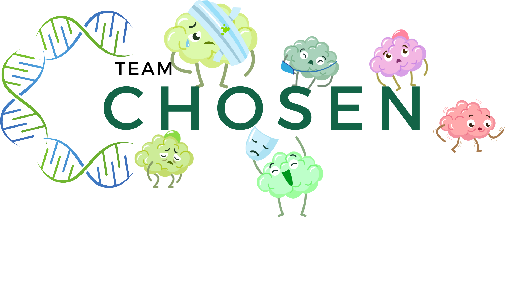

Explore

References:
Main Papers used:
- Sharma, L. (2023). Mathematical modelling (using ordinary differential equations) to study the growth of cancer cells and their optimal control. International Journal of Creative Research Thoughts (IJCRT), 11(12), 2320-2882. Link
- Unni, P., & Seshaiyer, P. (2019). Mathematical modeling, analysis, and simulation of tumor dynamics with drug interventions. Computational and Mathematical Methods in Medicine, 2019, Article ID 4079298, 1–13. Link
Extras:
- Saini, A., Kumar, M., Bhatt, S., Saini, V., & Malik, A. (2020). Cancer causes and treatments. Int J Pharm Sci Res, 11(7), 3121-3134.
- Ghosh, S. (2020). Computational immunology: applications. CRC Press.
- Schättler, H., & Ledzewicz, U. (2015). Optimal control for mathematical models of cancer therapies. An application of geometric methods.
- Global Burden of Disease Cancer Collaboration. (2019). Global, regional, and national cancer incidence, mortality, years of life lost, years lived with disability, and disability-adjusted life-years for 29 cancer groups, 1990 to 2017: a systematic analysis for the global burden of disease study. JAMA oncology.
- Sriharikrishnaa, S., Suresh, P. S., & Prasada K, S. (2023). An introduction to fundamentals of cancer biology. In Optical Polarimetric Modalities for Biomedical Research (pp. 307-330). Cham: Springer International Publishing.
- Bloom, J. R., & Spiegel, D. (1984). The relationship of two dimensions of social support to the psychological well-being and social functioning of women with advanced breast cancer. Social Science & Medicine, 19(8), 831-837.
- Azizi, T. (2024). Mathematical Modeling of Cancer Progression. AppliedMath, 4(3), 1065-1079.